Farmacias Limeñas - Proyecto de Análisis del Fill Rate
Presentación General
Este proyecto busca implementar una solución tecnológica integral para la empresa ficticia Farmacias Limeñas,
dedicada a la comercialización y distribución de productos farmacéuticos en Lima Metropolitana.
A través de herramientas como SQL Azure, Microsoft Fabric, Power BI, Power Apps y Power Automate, se construyó una arquitectura
de datos que permite analizar el Fill Rate, un indicador clave para medir la eficiencia operativa
de la cadena de suministro.
La solución fue diseñada para brindar una trazabilidad completa de los pedidos y entregas,
permitiendo una toma de decisiones más rápida y basada en datos. El proyecto también incorpora automatizaciones
para la actualización diaria de la base de datos, generación de alertas y visualización mediante dashboard operativos.
A lo largo de esta página web se describen todas las etapas del proceso, desde la conexión con la base de datos SQL
hasta la implementación de automatizaciones y paneles interactivos. Esta solución está orientada a facilitar la gestión
y mejora del indicador Fill Rate, permitiendo identificar ineficiencias y mejorar el servicio al cliente.
2. Arquitectura del Proyecto
La arquitectura del proyecto fue diseñada para integrar múltiples herramientas en la nube con el fin de
automatizar y facilitar la medición del Fill Rate. Esta solución combina el uso de una base
de datos en SQL Azure, procesamiento automático en Microsoft Fabric, aplicaciones operativas en Power Apps,
flujos de automatización con Power Automate y visualizaciones con Power BI.
Cada componente cumple un rol específico dentro del flujo de datos. Desde la carga de información diaria
hasta la generación de reportes automáticos y dashboards interactivos, la arquitectura fue pensada para lograr
eficiencia, trazabilidad y control operativo.
- Origen: Archivos Excel con datos de pedidos, entregas, productos y almacenes.
- SQL Azure: Carga y normalización de datos en base de datos relacional en la nube.
- Fabric - Data Warehouse: Importación a un entorno analítico para uso en Power BI.
- Pipeline: Automatización diaria para actualizar las tablas desde SQL a Fabric.
- Notebook en PySpark: Envío de resumen de pedidos diarios al correo.
- Power Apps: Aplicaciones para registrar y modificar pedidos, entregas e inventario.
- Power Automate: Generación automática de reportes semanales vía correo.
- Power BI: Dashboard de seguimiento de desempeño logístico.

Figura: Arquitectura técnica del proyecto Fill Rate
3. Diseño del Modelo de Datos
A continuación, se presenta el modelo de datos relacional utilizado para el análisis del Fill Rate.
Las tablas fueron importadas desde Azure SQL a Microsoft Fabric y modeladas en un entorno de Data Warehouse,
permitiendo establecer relaciones clave entre pedidos, entregas, inventario y entidades maestras como productos y clientes.
El modelo está compuesto por varias tablas interrelacionadas que permiten capturar tanto la información de pedidos como de entregas, inventario y datos maestros.
A continuación, se describe brevemente el propósito de cada una:
- G5_Clientes: Contiene información de las boticas o puntos de venta, incluyendo ID del cliente, nombre, dirección y categoría.
- G5_Productos: Incluye todos los productos disponibles, su nombre, precio unitario y proveedor asociado.
- G5_Proveedores: Datos básicos de los proveedores, como nombre y contacto.
- G5_Almacen: Registro de almacenes físicos, con ciudad, dirección y persona encargada.
- G5_Inventario: Muestra el stock disponible por producto y por almacén, a nivel de fechas específicas.
- G5_Pedidos: Contiene los pedidos realizados por los clientes, con su respectiva fecha y producto solicitado.
- G5_Detalle_Pedidos: Detalle por producto y cantidad de cada pedido registrado.
- G5_Entregas: Registra cuándo y desde qué almacén se realizó una entrega, si fue completa o no, y quién la gestionó.
- G5_Detalle_Entrega: Detalle de la cantidad efectivamente entregada para cada producto.
- Calendario: Tabla maestra de fechas utilizada para análisis temporales y generación de medidas como el Fill Rate mensual.
4. Notebook en PySpark
Una parte clave del proceso automatizado fue el desarrollo de un notebook utilizando PySpark,
que se ejecuta al final del pipeline diario creado en Microsoft Fabric.
Este notebook tiene como propósito principal consultar la cantidad total de pedidos realizados durante el día
y enviar dicha información por correo electrónico al usuario.
Esta automatización es parte de la estrategia para mantener informada a la operación sin necesidad de intervención manual,
promoviendo la toma de decisiones basadas en datos en tiempo real.
🔄 Flujo del Proceso
- Consulta de datos: El notebook se conecta al Data Warehouse en Fabric y realiza una consulta SQL que cuenta los pedidos registrados en la fecha actual.
- Formateo de resultados: Se transforma la información a un formato legible.
- Notificación vía correo electrónico: Se envía un correo automático con los resultados, utilizando un servidor SMTP (en este caso, Gmail).
Este notebook se configura con la cuenta de Microsoft Fabric
g05@tqt7l.onmicrosoft.com y envía correos a la cuenta personal del usuario
karyj98@hotmail.com.
5. Automatización en Fabric (Pipeline)
La automatización del flujo de datos es una parte fundamental del proyecto de análisis del Fill Rate en Farmacias Limeñas.
Para lograr que la información esté siempre actualizada, se configuró un pipeline automático dentro de Microsoft Fabric llamado pl_tablas.
Este pipeline tiene como objetivo central la actualización diaria de las tablas del Data Warehouse, asegurando que la información más reciente
esté disponible para los dashboards de Power BI, el notebook PySpark y los procesos automatizados posteriores.
📌 Características del Pipeline
- Nombre del pipeline:
pl_tablas
- Frecuencia de ejecución: Diario a las 8:00 PM
- Herramienta usada: Microsoft Fabric - Data Factory
- Tipo de tareas:
- Actualiza las tablas importadas desde Azure SQL hacia Fabric Data Warehouse
- Ejecuta automáticamente el Notebook de PySpark al finalizar
- No realiza carga desde fuentes externas, sino sincronización y limpieza de las tablas ya integradas
📈 Flujo del Pipeline
El pipeline sigue una estructura secuencial donde cada tabla es procesada individualmente mediante Data Flows,
y al final del flujo se llama automáticamente al notebook que genera y envía un resumen diario de los pedidos registrados.
6. Power Apps y Flujo Operativo
Uno de los pilares del proyecto fue la implementación de una aplicación operativa en Power Apps que permita registrar, consultar y actualizar información clave como pedidos, entregas, inventario y datos maestros.
A continuación, se muestra el diagrama de flujo que resume el funcionamiento lógico detrás de la aplicación.
El diagrama anterior define los 4 principales procesos habilitados en Power Apps:
- Registro de Pedido Nuevo:
Se valida si el cliente ya existe. En caso contrario, se registra uno nuevo. Luego se verifica si el producto está registrado.
Si no existe, se cancela el pedido; si existe, se registra en las tablas
G5_Pedidos y G5_Detalle_Pedidos.
- Registro de Entrega:
Se ingresan los datos de la entrega en
G5_Entregas y G5_Detalle_Entrega, verificando si el stock es suficiente.
Dependiendo de ello, se marca la entrega como completa (S) o incompleta (N).
- Actualización de Inventario:
Flujo independiente que permite ajustar en tiempo real la cantidad disponible de productos en la tabla
G5_Inventario.
- Actualización de Tablas Maestras:
Permite registrar o modificar información en las tablas
G5_Clientes, G5_Proveedores,
G5_Productos y G5_Almacen.
Este flujo permite que múltiples usuarios puedan interactuar con el sistema desde una misma interfaz operativa,
garantizando que los datos estén sincronizados con el Data Warehouse en Microsoft Fabric.
Para facilitar la gestión de pedidos, entregas, inventario y tablas maestras, se diseñó una aplicación en Power Apps basada en el flujo lógico previamente definido.
Esta aplicación está dirigida a diferentes perfiles dentro de la empresa, en este caso, el Asistente de Logística es el responsable de registrar los pedidos realizados por los clientes.
Desde esta pantalla principal, el usuario puede elegir entre cuatro flujos operativos:
Registrar pedido, Registrar entrega, Registrar inventario y Actualizar tablas maestras.
A continuación, se detalla el proceso de Registro de pedidos.
Flujo 1: Registro de Pedidos (Responsable: Asistente de Ventas)
El proceso inicia al seleccionar la opción Registrar pedido. Aparecerá una ventana emergente (Imagen 2) que recuerda al usuario verificar si el cliente ya existe en la base de datos.
En caso no exista, deberá ser registrado.
En la siguiente pantalla (Imagen 3), se consulta si el cliente ya existe. Si no se encuentra, se procede a registrar al nuevo cliente en la base de datos con sus respectivos campos:
nombre_cliente, cliente_id, categoría, dirección.
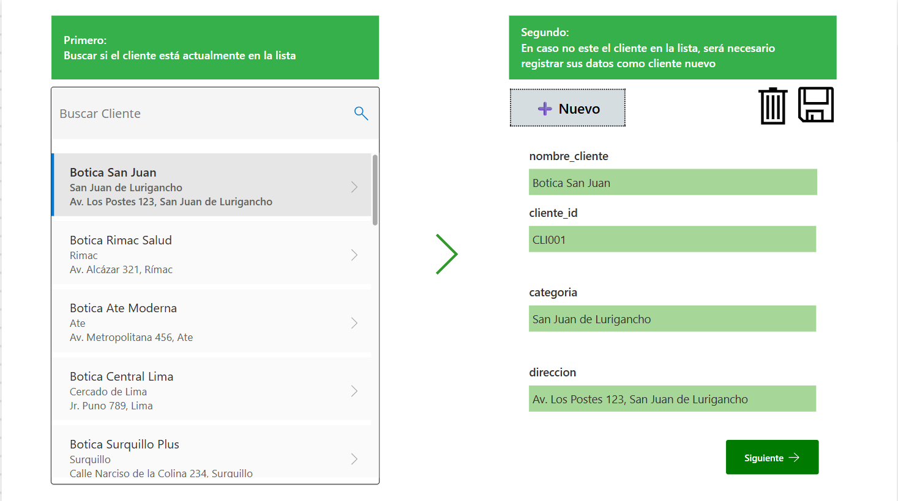
Una vez validado el cliente, se accede al formulario para registrar el nuevo pedido (Imagen 4).
Algunos campos como el ID del pedido y el ID del cliente son autocompletados para facilitar el proceso. También se agregan notas laterales que ayudan al operador.
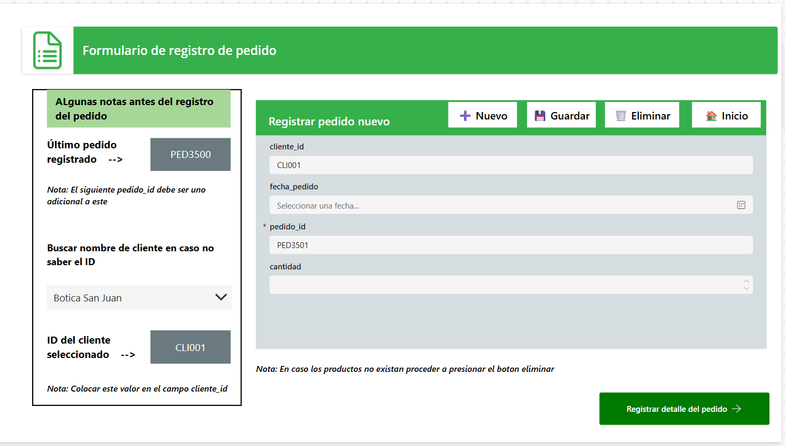
Finalmente, se completa el formulario de detalle del pedido (Imagen 5), donde se busca y selecciona el producto correspondiente.
En caso el producto no exista, el operador debe regresar y eliminar el pedido para evitar inconsistencias, ya que este no puede registrar nuevos productos.
Si el producto existe, se procede a ingresar la cantidad solicitada y finalizar el pedido.
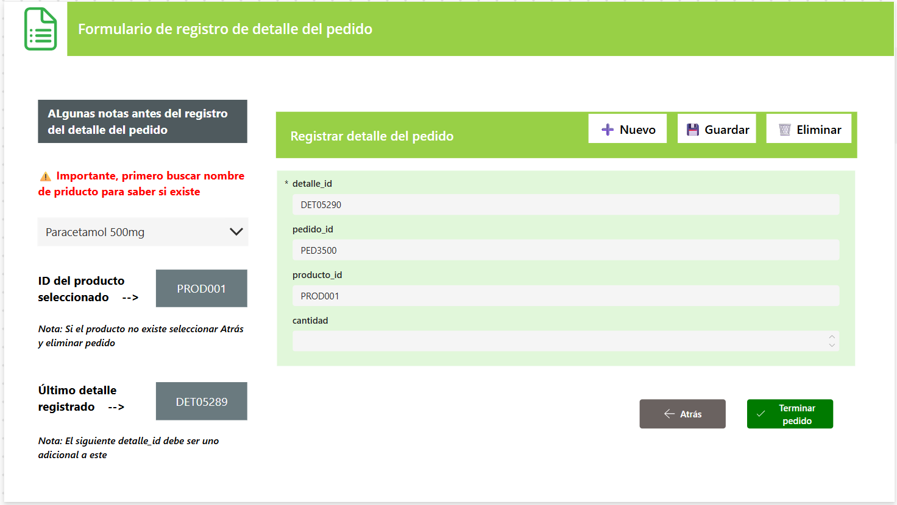
Este flujo garantiza el correcto registro de los pedidos en las tablas Pedidos y Detalle_Pedidos,
manteniendo la integridad de los datos y asegurando la trazabilidad dentro del sistema.
Flujo 2: Registro de Entregas (Responsable: Auxiliar de Almacén o Logística)
El proceso de entrega se inicia desde la pantalla principal de la aplicación.
El auxiliar de almacén o logística es el encargado de registrar correctamente los productos entregados, verificando antes
la disponibilidad en inventario y completando la información de seguimiento logístico.
En la primera pantalla, se accede al formulario de registro del detalle de entrega, donde se selecciona el producto
correspondiente al pedido. En el lado izquierdo, se visualiza el stock disponible por producto y almacén,
lo cual permite validar si la entrega podrá realizarse de forma completa.
Esta pantalla también contiene un formulario con los campos de detalle_entrega_id, entrega_id,
producto_id y cantidad_entregada, los cuales deben ser completados. Algunos campos se autocompletan
para facilitar el proceso.
Luego de registrar el detalle de la entrega, se procede al formulario principal de entrega.
En esta nueva pantalla se ingresan los datos del repartidor, la fecha de entrega y el código del pedido correspondiente.
Además, el usuario debe indicar si la entrega fue completa (S) o incompleta (N)
según la validación previa de stock.
Esta información se graba en las tablas G5_Entregas y G5_Detalle_Entrega respectivamente.
El proceso concluye al presionar el botón “Terminar entrega”.
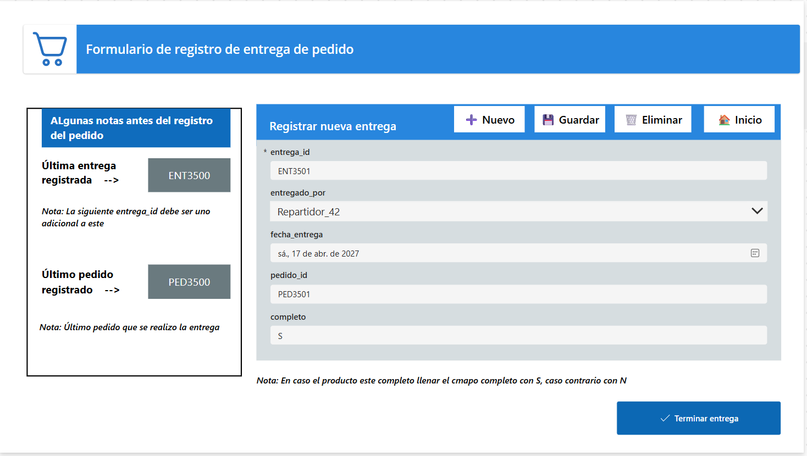
Flujo 3: Registro de Inventario (Responsable: Operador de Logística)
Este flujo es utilizado por el Auxiliar de Logística para registrar la actualización de inventario
por producto y almacén. Desde la pantalla de ingreso se visualizan datos clave para la validación, incluyendo el
último inventario registrado y la última entrega realizada, lo cual permite evaluar
correctamente el stock actualizado.
En el panel izquierdo, el usuario puede consultar la información del producto y almacén seleccionado, así como los valores históricos.
En el formulario del lado derecho se debe completar el ID del inventario, el código del producto, almacén, cantidad y fecha de actualización.
La aplicación valida que tanto el producto_id como el almacen_id existan previamente.
Además, impide registrar inventarios con inventario_id duplicado, evitando inconsistencias en la base de datos.
Al presionar el botón “Terminar registro de inventario”, se envía la información a la tabla G5_Inventario,
completando el proceso de actualización.
Flujo 4: Actualización de Tablas Maestras (Responsable: Administrador de Datos)
En esta parte del sistema, el Administrador de datos maestros tiene la responsabilidad
de mantener actualizadas las entidades clave del sistema: Clientes, Proveedores, Productos y Almacenes.
Estas tablas alimentan todos los procesos operativos y su correcta gestión es vital para asegurar que los pedidos
y entregas se puedan registrar adecuadamente.
Esta pantalla actúa como menú principal para el mantenimiento de las tablas maestras. Desde aquí, el usuario puede elegir
si desea registrar un nuevo cliente, proveedor, producto o almacén.
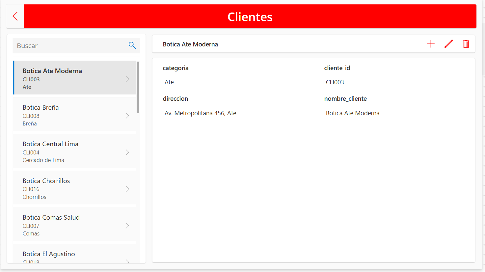
Al seleccionar la opción Registrar cliente, se accede a la pantalla donde se visualiza el listado actual de clientes,
permitiendo también su edición o eliminación. Para registrar uno nuevo, se utiliza el botón "+".
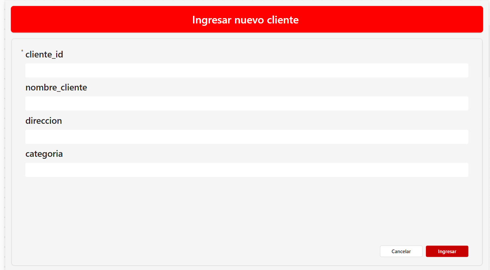
Esta pantalla permite registrar un nuevo cliente con sus campos básicos: ID, nombre, dirección y categoría (como distrito).
Es esencial validar que no haya duplicados antes de ingresar.
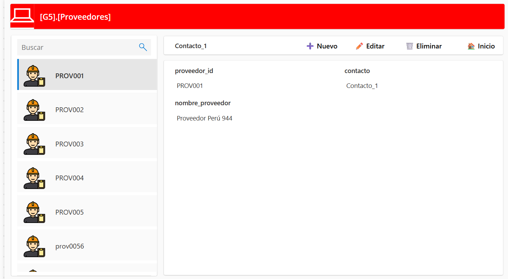
En la sección de Proveedores, el sistema permite consultar rápidamente los registros actuales, y
usar el botón "Nuevo" para registrar uno adicional en la misma pantalla.
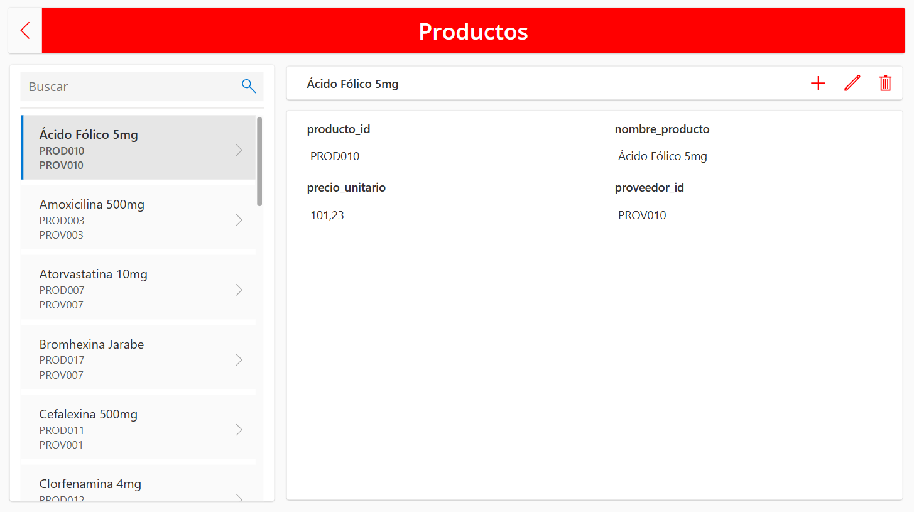
En la opción Ingresar nuevo producto, se listan todos los productos registrados junto con su precio
unitario y proveedor. Para ingresar un nuevo producto, se utiliza el botón "+".
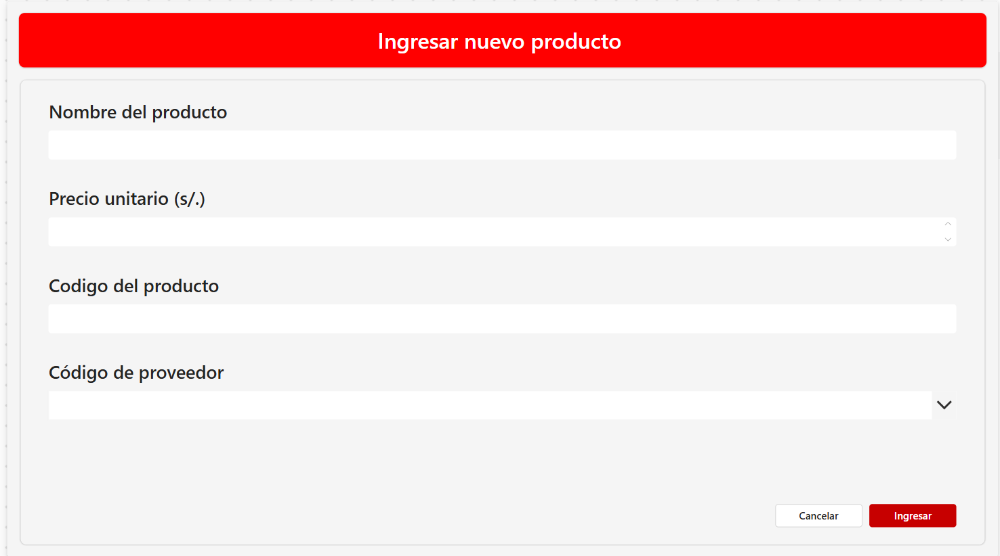
Aquí se ingresan los datos básicos del producto: nombre, código, precio y proveedor asociado. Esta información es
clave para vincular con las entregas y pedidos.
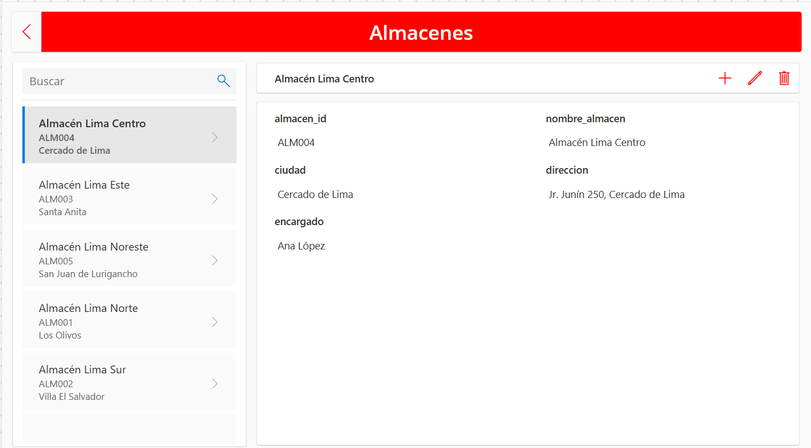
En la sección de Almacenes, se muestra la información registrada de cada almacén, incluyendo
su ubicación y persona encargada. Para registrar un nuevo almacén, se utiliza el botón "+".
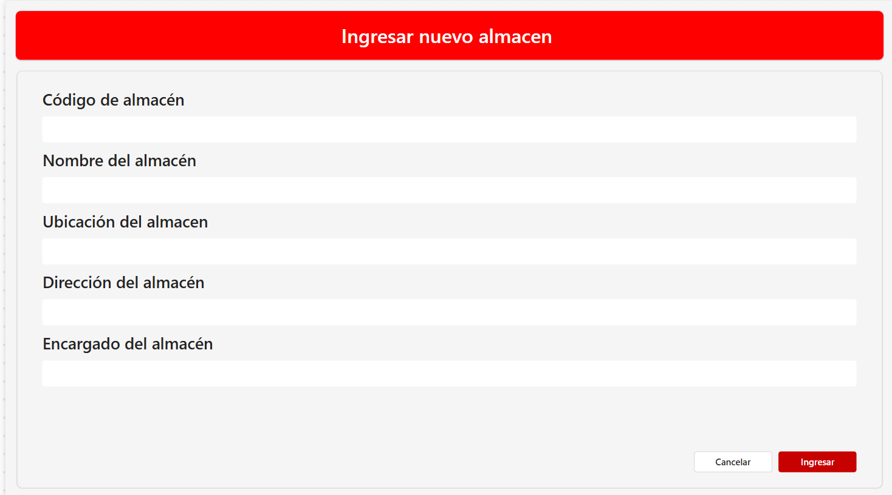
Esta pantalla permite registrar los datos del nuevo almacén: nombre, ubicación, dirección y nombre del encargado.
Esto permite que los procesos de inventario y entregas se mantengan correctamente trazados por ubicación física.
7. Dashboard en Power BI
Modelo de datos en Power BI
El modelo de datos fue construido en Power BI a partir de las tablas publicadas desde el entorno de Microsoft Fabric. Las relaciones se establecen entre las tablas de hechos y dimensiones mediante claves primarias y foráneas. La estructura responde a un esquema en estrella, permitiendo eficiencia en los análisis.
Dentro de este modelo, se incluye una tabla de fechas (Calendario) para análisis temporales y una tabla de medidas que contiene indicadores calculados como el porcentaje de Fill Rate, cantidad entregada, cantidad pendiente, entre otros.
Este modelo es administrado por el Analista de Inteligencia de Negocios, quien se encarga de estructurar y validar los datos antes de la construcción del dashboard.

Interfaz general de Power BI
Con el modelo de datos ya estructurado, se procede a crear el reporte directamente desde el entorno de Power BI en Microsoft Fabric. La interfaz está organizada por secciones y preguntas que permiten explorar tanto el contexto del negocio como los resultados del análisis.
Esta estructura permite que el Jefe de Logística y demás tomadores de decisión naveguen fácilmente entre páginas y accedan a visualizaciones clave.

Caso de negocio
La siguiente visualización presenta un resumen del objetivo, estrategia y análisis costo-beneficio del proyecto:
- Objetivo: Incrementar el Fill Rate mensual de 92% a 97% en un año.
- Estrategia: Optimizar inventario, planificar la demanda, monitorear entregas y generar alertas por baja rotación.
- Costo-beneficio: Una inversión de S/ 7,000 genera un retorno proyectado de S/ 1,836,000 anuales.

Definición del indicador
Esta vista define el indicador principal del proyecto:
- Fill Rate (%) = (Pedidos entregados completos y a tiempo / Total de pedidos) × 100
- Se mide en porcentaje, de forma mensual.
- Cada punto porcentual de mejora representa S/ 60,000 en ingresos mensuales recuperados.

Dashboard principal
Aquí se visualiza el valor actual del Fill Rate mensual: 91.69% al 31 de mayo de 2025, clasificado como nivel amarillo.
El gráfico tipo velocímetro permite al Jefe de Logística monitorear el cumplimiento en tiempo real. Se incluye además un filtro de fechas para realizar análisis históricos o proyectados.

Reporte de evolución del Fill Rate
Esta visualización muestra el avance del Fill Rate frente al objetivo de 97%:
- Línea roja: Fill Rate actual (92% estable).
- Línea azul: Fill Rate proyectado (ascenso progresivo hasta 97% en abril 2026).
- Incluye hitos de implementación y seguimiento.
Este panel es consultado tanto por el Gerente de Operaciones como por el Equipo de Planeamiento Estratégico.

Análisis 1: Mejor valor mensual del Fill Rate (enero - mayo 2025)
Este análisis responde a la pregunta: ¿Cuál fue el mejor valor del Fill Rate mensual en Lima durante los primeros 5 meses del 2025?
- El valor máximo fue de 95% en marzo 2025.
- El mínimo fue de 87% en febrero 2025, evidenciando alta variabilidad.
Este análisis es útil para el Supervisor de Distribución, encargado de hacer seguimiento al rendimiento logístico por periodo.
Análisis 2: Almacén con mayor desempeño promedio
Esta vista analiza: ¿Qué almacén tuvo el mayor promedio de Fill Rate en los primeros 5 meses del 2025?
- Almacén Lima Sur lidera con un promedio de 91.60%.
- Se evidencian diferencias entre almacenes, útil para identificar buenas prácticas replicables.
Este análisis es clave para el Encargado de Centro de Distribución de cada zona.
Análisis 3: Clientes con mayor promedio de Fill Rate
Esta vista analiza: ¿Cuáles fueron los clientes (boticas) con mayor cumplimiento de entregas completas en los primeros cinco meses del 2025?
- El gráfico de barras muestra el top 2 de clientes: Botica Lince Farma y Botica Ate Moderna.
- Ambas boticas destacan con un Fill Rate del 96.77%, superando el promedio general del indicador.
- En la hoja de detalle se observa el desglose de pedidos de Botica Ate Moderna, con mes, almacén, encargado y estado (
PedidosCompletos = 1).
Esta información es especialmente útil para el Jefe de Atención a Clientes, quien puede identificar buenas prácticas en estas relaciones comerciales.
Análisis 4: Producto con menor cumplimiento de entregas
Esta vista analiza: ¿Qué producto tuvo el menor índice de cumplimiento (Fill Rate) en los primeros meses del 2025?
- El gráfico de la izquierda muestra que la Amoxicilina 500mg fue el producto con más fallas en entregas completas.
- Este producto registró un Fill Rate del 78.05%, evidenciando problemas de disponibilidad.
- La hoja de detalle (imagen derecha) presenta cliente, almacén, cantidad entregada y monto de venta relacionados a este producto.
Este análisis permite al Analista de Abastecimiento priorizar ajustes de stock y mejorar la previsión de productos críticos.
Análisis 5: Tiempo promedio entre pedido y entrega
Esta vista analiza: ¿Cuál fue el tiempo promedio en días entre el registro del pedido y su entrega en los primeros cinco meses del 2025?
- El gráfico de línea muestra un promedio general de 2 días entre pedido y entrega.
- Se identifica un pico de 3 días en marzo, lo que puede reflejar una sobrecarga operativa.
- La hoja de detalle (imagen derecha) incluye cada pedido con su fecha de pedido y entrega, útil para detectar retrasos puntuales.
Este análisis debe ser gestionado por el Supervisor de Logística para optimizar el flujo de entregas.
Análisis 6: Cantidad total de productos pedidos y entregados
Esta vista analiza: ¿Cuál fue la cantidad total de productos entregados en los primeros meses del 2025?
- La visualización de la izquierda muestra la evolución mensual con un total de 5,822 productos entregados.
- El mes con mayor movimiento fue marzo, alcanzando 1,195 unidades.
- La hoja de detalle (imagen derecha) presenta los pedidos correspondientes, útil para verificar la consistencia de los datos.
Este análisis es valioso para el Planificador de la Demanda, quien puede anticiparse a futuros picos de consumo.
Análisis 7: Facturación mensual con Fill Rate menor a 100%
Esta vista analiza: ¿Cuál fue la facturación mensual (en soles) durante los primeros cinco meses del 2025 con Fill Rate menor a 100%?
- El gráfico de la izquierda muestra la facturación mensual, destacando febrero con S/ 138 mil como el mes de mayor ingreso.
- El valor más bajo se registró en abril con S/ 125 mil.
- La tabla de detalle (imagen derecha) desglosa pedidos, cantidades entregadas y el total vendido por botica.
Esta información resulta crítica para el Gerente de Operaciones, quien puede correlacionar fallas logísticas con impactos financieros.
Análisis 8: Almacenes con cumplimiento completo
Esta vista analiza: ¿Cuál fue el cliente que generó la mayor facturación a Farmacias Limeñas en los primeros cinco meses del 2025?
- Botica San Miguel fue el cliente con mayor facturación, alcanzando un total de S/ 56,285.
- La visualización de barras muestra claramente este liderazgo en comparación con otras boticas.
- La hoja de detalle valida que se realizaron 186 pedidos completos, distribuidos en distintos almacenes.
Este análisis es responsabilidad del Analista de Business Intelligence, encargado de identificar los clientes más rentables.


Análisis 9: Productos con mayores ventas
Este análisis responde: ¿Cuáles fueron los productos con mayor facturación dentro del almacén Lima Sur en los primeros meses de 2025?
- Atorvastatina 10mg con S/ 55 mil.
- Furosemida 40mg con S/ 52 mil.
- Salbutamol Inhalador con S/ 51 mil.
- Metformina 850mg con S/ 49 mil.
La hoja de detalle muestra la trazabilidad de cada pedido, con montos individuales y cantidades entregadas, lo que refuerza la validez del análisis.
Este análisis corresponde al Analista de Business Intelligence, encargado de monitorear la rentabilidad por producto.


Análisis 10: Clientes con bajo rendimiento
Este análisis identifica: ¿Cuáles son las boticas con menor cumplimiento de entregas (Fill Rate) en los primeros meses del 2025?
- Botica Los Olivos con un Fill Rate de 86%.
- Botica Breña con un Fill Rate de 75%.
- Botica Comas Salud con un Fill Rate de 71%.
La hoja de detalle muestra que, aunque hubo entregas completas individuales, estos clientes presentaron pedidos cancelados o incompletos que redujeron su indicador final.
Este análisis corresponde al Analista de Business Intelligence, quien debe identificar oportunidades de mejora en la atención a clientes con bajo desempeño.
Resumen: Esta sección permitió identificar claramente a los clientes y productos más y menos eficientes en términos de facturación y cumplimiento de pedidos. Se concluye que una mejor trazabilidad por almacén y cliente puede facilitar una estrategia de mejora en la operación logística.
8. Automatización con Power Automate
En esta sección se muestra cómo se ha utilizado Power Automate para automatizar el envío diario del reporte de indicadores de Fill Rate de Farmacias Limeñas. Esta automatización permite que el usuario reciba cada mañana el archivo PDF con el dashboard actualizado, sin necesidad de intervención manual.
El flujo ha sido programado para ejecutarse automáticamente todos los días a las 11:00 AM. A continuación, se presenta el diseño del flujo implementado:
- ⏰ Recurrence: Disparador programado para que se ejecute todos los días a las 11:00 AM.
- 🔁 Actualizar un conjunto de datos: Refresca los datos del reporte de Power BI.
- 📤 Exportar a archivo: Genera el reporte en formato PDF directamente desde Power BI.
- 📧 Enviar correo electrónico (V2): Envía automáticamente el reporte generado al usuario correspondiente.
Este flujo fue desarrollado por el responsable de la automatización de reportes y monitoreo: Analista de Inteligencia de Negocios.
A continuación, se muestra un ejemplo del correo recibido en la bandeja de entrada del usuario tras la ejecución del flujo:
El remitente corresponde a la cuenta corporativa de Microsoft Fabric g05@tqt7l.onmicrosoft.com y se envía a la dirección personal del usuario karyj98@hotmail.com.
Este tipo de automatización optimiza los tiempos de respuesta y facilita el seguimiento diario del indicador clave del proyecto: el Fill Rate.
9. Conclusiones
El proyecto “Optimización del Fill Rate para Farmacias Limeñas” logró integrar exitosamente diversas herramientas tecnológicas para transformar por completo la gestión operativa y analítica del proceso logístico. Desde la captura y validación de pedidos en Power Apps hasta la actualización automatizada del modelo en Microsoft Fabric, se construyó un flujo sólido y eficiente que garantiza información actualizada en tiempo real. A través de un modelo de datos estructurado y la automatización de cálculos en notebooks PySpark, se permitió calcular de forma precisa indicadores clave como el Fill Rate, asegurando trazabilidad y confiabilidad en cada etapa del proceso. El dashboard en Power BI facilitó el análisis visual, permitiendo identificar oportunidades de mejora en almacenes, productos y clientes, así como comprender la relación entre el cumplimiento de entregas y la facturación mensual.
Además, se estableció un sistema automatizado de reporte diario mediante Power Automate, que distribuye informes actualizados a las partes responsables sin intervención manual, lo que demuestra una clara apuesta por la eficiencia y la continuidad operativa. Todo este ecosistema digital ha permitido a la empresa simular cómo una cadena farmacéutica podría adoptar decisiones basadas en datos confiables, mejorando tanto el servicio al cliente como el control interno. En resumen, este proyecto no solo ha cumplido con el objetivo de optimizar el Fill Rate, sino que también ha demostrado cómo la integración tecnológica puede aportar valor real, escalable y sostenible en entornos logísticos altamente sensibles como el de la distribución farmacéutica.